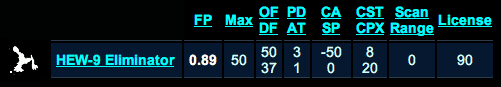

Unit Statistics
Every unit in UltraCorps has statistics - offense, defense, and so on - that govern its cost and its movement, and determine how well it performs in battle. The Units button on the top bar will show you a complete list of all units currently in the game (in some games, the strongest units are not available until later turns) with their statistics. A sample display is shown below, with definitions of the abbreviations.
Sample Unit Statistics Display:

Definitions
- License Cost
- Cost in Ultranium to purchase a license - that is, a factory or other production facility - for this unit. A world may only produce those units for which it has licenses. License cost is fixed - it does not fluctuate with the economy.
- Max: Maximum
-
Maximum number you may enter in the Quantity field when ordering this unit. Small and cheap units can be produced up to 50 at a time. The Max number gets smaller as units get larger and more complex; the most complex units can only be produced one at a time. This makes it impossible to "lock in" low costs for huge orders of the biggest units.
Note that you can enter multiple orders at the maximum. If you have a big, rich world, it might produce hundreds of small units in one turn . . . but you would have to place the orders 50 at a time, and only the ones finished on the same turn will lock in the current price. There is a special "clone this order"
button which can be used to duplicate your last order.
- OF: Offense
- This is the percentage chance of making a successful attack. For each attack a unit has, it chooses a random enemy target and "rolls" a 1-100 die. Any roll under or equal to the offense number is a successful hit. For example, an HEW-9 Eliminator, with an offensive rating of 50, successfully hits an enemy target if it rolls a number equal to or under 50; if it rolls 51 or over, it simply misses the target. For more information, see Battles.
- DF: Defense
- This is the unit's percentage chance of defending against a hit. For each hit a unit takes, a 1-100 die is "rolled." Any roll under or equal to the defense number results in a successful defense and leaves the unit unharmed; any roll over the defense number destroys the unit. For more information, see Battles.
- PD: Population Damage
- Indicates damage to enemy population when this unit attacks. A PD of 10 eliminates one population unit per round. In other words, the PD value equals 10 times the number of people that will die per round. Note that population damage occurs whether or not the unit has any successful attacks. For more information, see Battles.
- AT: Attacks
-
Indicates how many times the unit may attack (and thus the maximum number of units it can destroy) in a single round of battle. The chance of each attack hitting its target is determined by the unit's offense. For more information, see Battles.
Note that the expected damage of a unit may be calculated by multiplying its OF by its AT. For instance, if a unit has an OF of 50%, it hits half the time. If it has one attack per round, you can expect it to hit one enemy unit every other round (before defenses are taken into account). If it has 10 attacks per round, though, you can expect it to get five hits a round! (How many of these are kills will depend on the defense of the target.)
- CA: Carrying Capacity
-
Indicates whether a unit can carry other units between planets, or if it needs to be carried. Positive numbers indicate star-traveling units with cargo capacity (like the Cargo Booster, which can carry 100). Zero indicates self-propelled spaceships that cannot carry anything else (like the X-5 Raider). Negative numbers indicate units that must be carried (such as HEW-9 Eliminator, which has a CA of negative 50).
For a fleet to be deployed to another world, its total CA must be 0 or more. If CA is negative, the fleet is overloaded! So, using the units above, a Cargo Booster (CA of 100) could carry two HEW-9 Eliminators (CA of -50 each).
- SP: Speed
- This is the speed at which the unit can move between worlds, in map grid units per tick. Note that when units are gathered into a fleet, the fleet's speed is determined by the slowest unit in the fleet. A speed rating of N/A (not applicable) means that the unit is not self-propelled and must be carried. Its speed then depends on what is carrying it.
- CST: Cost
- Amount of Ultranium needed to produce a unit. If the game has an economy, price fluctuates according to galaxy-wide demand. Otherwise, price is stable through the game.
- CPX: Complexity
- Population needed to produce a unit in one turn. For example, a world with a population of 500 can build a unit with a CPX of 500 in one turn . . . or a unit with a CPX of 1,000 in two turns. This number does not change. See Unit Production for more information.
- FP: Firepower
- A summary statistic which factors in offense, defense, and number of attacks. Firepower is a relative measure of overall combat strength. It applies to fleets and worlds as well as individual units. See Firepower for more information.
- Scan Range
- Some units are scanners, able to detect incoming and outgoing fleets within a certain range of the world. "Scan Range" is this detection distance. See Scanners for more information.